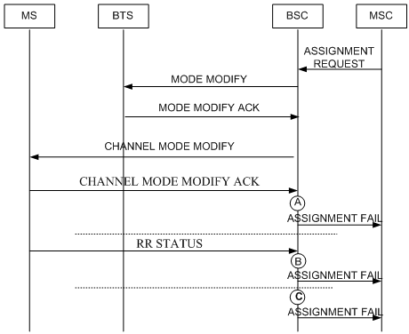

Measurement Counter
A3169B: CELL_CHMD_FAIL_UM_CAUSE
Description
This measurement provides the number of mode modification failures concerning the Um cause in the granularity period. The failures comprise timeout failures and mode modification failures over the Um interface.
Unit
Integer number or integer.
Measurement Point
After sending a CHANNEL MODE MODIFY message to the MS, the BSC waits for modification success message responded from the MS. This counter is measured in the following situations:
- The MS sends a CHANNEL MODE MODIFY ACKNOWLEDGE message to the BSC. If the Channel Mode field in the message is different from that saved in the CHANNEL MODE MODIFY message, the counter is incremented by one. See measurement point A in Figure 1.
- The MS sends an RR STATUS message to the BSC. If the cause value carried in the message is not Semantically incorrect message, Invalid mandatory information, Message type non-existent or not implemented, or Conditional IE error, and reallocation
is not performed, this counter is incremented by one. See measurement point B in Figure 1.
- The BSC sends a CHANNEL MODE MODIFY message to the MS and starts the timer specified for the mode modification response. If the timer expires, the counter is incremented by one. See measurement point C in Figure 1.
Figure 1 Mode modification failure

| A: number of mode modification failures concerning the reception of the mode modification response failure message over the Um interface |
| B: number of mode modification failures concerning the reception of the RR STATUS message, which leads to the mode modification failure |
| C: number of mode modification failures concerning the expiration of the timer specified for the mode modification response |
Formula
This is an original counter without involving any formula.
Copyright © Huawei Technologies Co., Ltd.